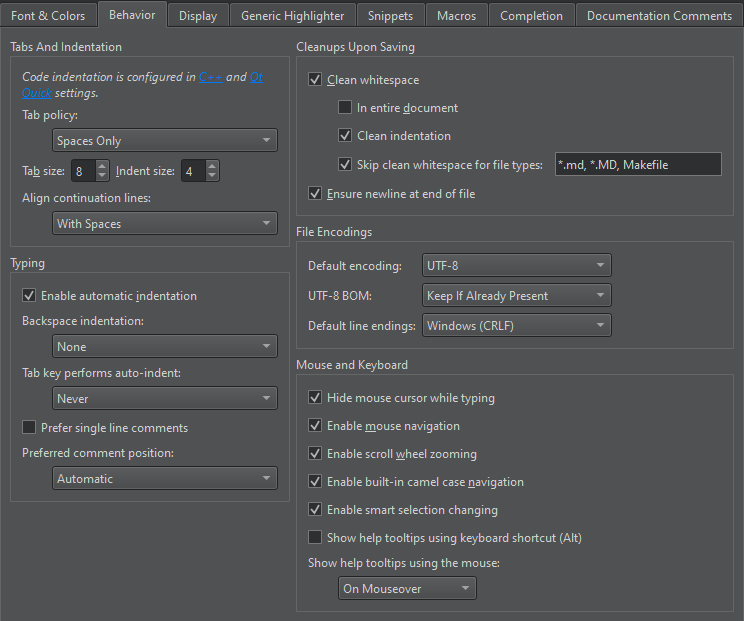

Behavior
To specify indentation settings for text files that do not have C++ or QML code (such as Python code files), select Preferences > Text Editor > Behavior.

You can specify how to interpret the Tab and Backspace key presses and how to align continuation lines.
Specifying Tab Settings
You can specify tab settings at the following levels:
- For all C++ files
- For all QML files
- For all other text files
- For C++ files in a project
- For QML files in a project
- For other text files in a project
Specifying Tabs and Indentation
You can specify tab policy and tab size in the Tabs and Indentation group. In the Tab policy field, select whether to use only spaces or only tabs for indentation, or to use a mixture of them.
By default, the tab length in code editor is 8 spaces and the indent size is 4 spaces. You can specify the tab length and indent size separately for each project and for different types of files.
You can have continuation lines aligned with the previous line. In the Align continuation lines field, select Not at all to disable automatic alignment and indent continuation lines to the logical depth. To always use spaces for alignment, select With Spaces. To follow the Tab policy, select With Regular Indent.
Setting Typing Preferences
When you type text or code, it is indented automatically according to the selected text editor or code style preferences. To set typing preferences, select Preferences > Text Editor > Behavior > Typing.
To disable automatic indentation, deselect the Enable automatic indentation check box.
You can specify how the indentation is decreased when you press Backspace in the Backspace indentation field. To go back one space at a time, select None. To decrease indentation in leading white space by one level, select Follows Previous Indents. To move back one tab length if the character to the left of the cursor is a space, select Unindents.
You can specify whether the Tab key automatically indents text when you press it. To automatically indent text, select Always in the Tab key performs auto-indent field. To only indent text when the cursor is located within leading white space, select In Leading White Space.
Your highlight definition file can have definitions for both multi and single line comments. To apply the single line comment definition when commenting out a selection, select Prefer single line comments. In Preferred comment position, select Automatic to let the highlight definition for the file determine the position of single line comments. If no highlight definition is available, the comments are placed after leading whitespace. Select After Whitespace to always place them there. Select At Line Start to place single line comments at the end of the line.
See also Change text encoding, Find preferences, C++ Code Style, Nim, Indent text or code, Qt Quick Code Style, and Font & Colors.